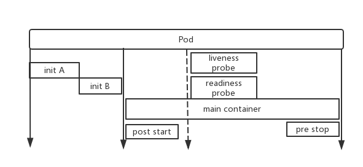

Pod¶
1、核心概念¶
- pod是k8s中最小的调度逻辑单元。
- pod一般都由controller去创建和管理。
- pod一般只有一个容器，若容器相互有紧密关系，必须放同个pod，此时pod也可以存在多个容器。
- pod内容器共享网络和存储。
- pod中的容器共享NET(提供网络隔离),UTS(提供主机名和网络domain name隔离),IPC(提供进程间通信的隔离)，这三个namespace。
- pod中的容器不共享USER(用户和用户组隔离),MNT(提供磁盘挂载点和文件系统的隔离能力，这里是指运行的时候的文件系统，而非存储卷共享的挂载),PID(提供进程隔离能力),这三个namespace。
3、pod中的存储卷¶
- 同一个pod中的容器可以共享存储卷。
- 存储卷可以视为pod的虚拟磁盘，上面的容器都可以挂载后进行共享该磁盘。
4、pod中的标签¶
- 对pod打上标签，使用标签选择器selector进行进一步操作，比如调度等。
5、控制器管理pod¶
- 控制器控制pod的属性会精确符合人的期望
- 支持滚动更新
- 支持控制容器数量
6、pod生命周期和健康检查¶
步骤:
1、初始化容器。
2、刚启动主容器的时候可以做
post_start 。3、在主容器启动完毕之前，可以做
pre_stop 。步骤图如下：
健康检查:
- 发生在
post_start阶段后 liveness probe做容器存活检测readiness probe就服务绪性监测
生命周期状态:
- 挂起(Pending): Pod已被Kubernetes系统接受，但有一个或者多个容器镜像尚未创建。等待时间包括调度pod的时间和通过网络下载镜像的时间，这可能需要花点时间。也有可能是调度和条件无法满足，无法被调度到一个合适的节点。
- 运行中(Running): 该Pod已经绑定到了一个节点上，Pod 中所有的容器都已被创建。至少有一个容器正在运行，或者正处于启动或重启状态。
- 成功(Succeeded): pod中的所有容器都成功，并且不会再重启。
- 失败(Failed): Pod中的所有容器都已终止了，并且至少有一个容器是因为失败终止。也就是说，容器以非0状态退出或者被系统终止。
- 未知(Unknown): 因为某些原因无法取得pod的状态，通常是因为与pod所在主机通信失败。一般是kubelet和api-proxy通信出现异常。
创建Pod原理:
用戶创建pod，将请求提交给api-server，api-server先将请求的目标状态保存在etcd中，然后api-server请求schedule进行调度，并且把调度结果保存在etcd中，完成更新etcd信息后，目标节点的kubelet通过api-server的状态变化获取到创建清单，根据清单在节点上创建并运行pod。并将执行结果的状态返回给api-server,再由api-server将状态存在etcd中。